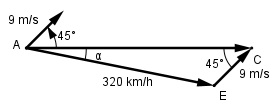

Aufgabe 221 Welchen Kurs K muss ein Flugzeug mit einer Geschwindigkeit von320 km/h fliegen, wenn ein Wind aus SW mit 9 m/s weht und es genau nach Osten fliegen will?

9 m/s = 9 * 3,6 km/h = 32,4 km/h Fall SSW: Sinussatz: 320 km/h 32,4 km/h ------------ = -------------- |*sin 45° sin 45° sin α 32,4 km/h * sin 45° 320 km/h = --------------------- |*sin α sin α 320 km/h * sin α = 32,4 km/h * sin 45° |:320 km/h 32,4 km/h * sin 45° sin α = --------------------- = 320 km/h 32,4 km/h * 0,7071 = ---------------------- = 0,0716 --> α = 4,1° 320 km/h Kurs rw. 90° + 4,1° = rw. 94,1°